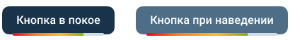
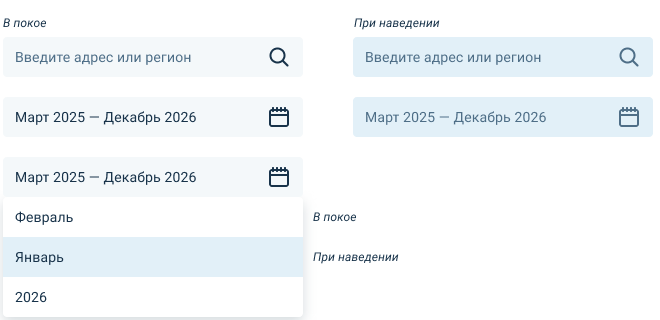
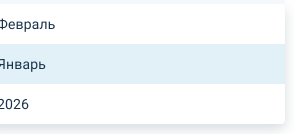
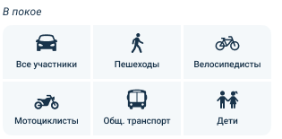
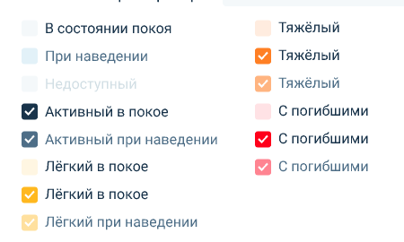
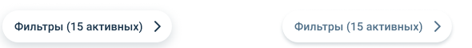
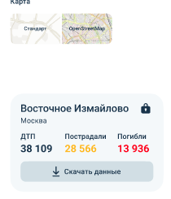

Кнопки primary
· слева наша сборка, справа фигма (UI-kit, 100%)
Кнопка в покое
Кнопка при наведении
наша

фигма
Поля поиска и периода
Введите адрес или регион
Март 2025 — Декабрь 2026
наши

фигма
Дропдаун месяца/года
Февраль
Январь
2026
наш

фигма
Чипы участников 2×3
Все участники
Пешеходы
Велосипедисты
Мотоциклисты
Общ. транспорт
Дети
наши

фигма
Чекбоксы severity (все состояния)
Без пострадавших (есть данные)
Лёгкий
Тяжёлый
С погибшими
Лёгкий (покой)
Тяжёлый (покой)
С погибшими (покой)
наши

фигма
Pill «Фильтры» и круг назад
Фильтры (15 активных)
наши (на белом без подложки)

фигма
Карточка статистики
Восточное Измайлово
Москва
ДТП
38 109
Пострадали
28 566
Погибли
13 936
Скачать данные
наша

фигма («Базовый», 63%; типографика сверена по design.fig: Medium 20/28, лейблы Medium 14/20, числа Bold 20/28)